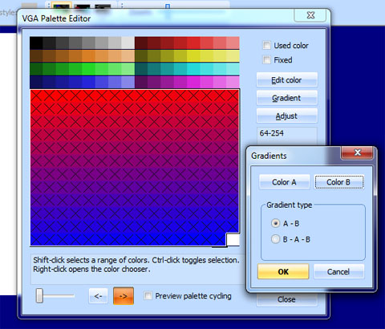
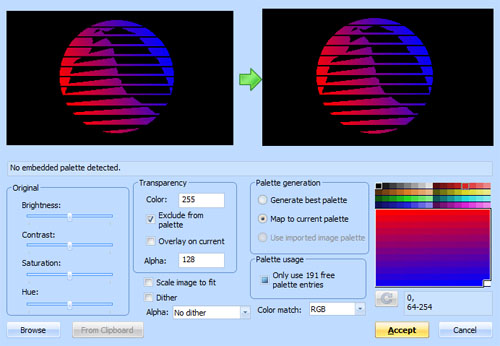
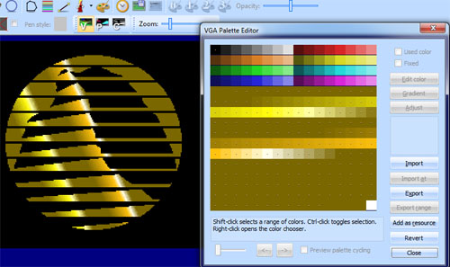
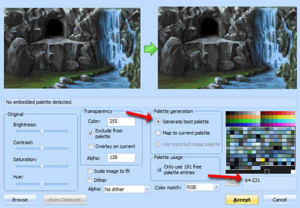

Important
This section applies to VGA games only
Palette cycling¶
Palette cycling is an animation effect that was popular during the days of palettized graphics. It involves rotating the palette colors to give the appearance of movement an otherwise static background. It can be seen most obviously in SCI games in the title screen with the Sierra logo, but also shows up in other places.
A palette cycling effect on a room with a waterfall in Quest for Glory.
Some especially impressive examples of what palette cycling can do can be found on this web page: http://www.effectgames.com/effect/article-Old_School_Color_Cycling_with_HTML5.html . Those examples use a lot of dithering, however, which looks better in a 640x480 canvas than the relatively low 320x200 resolution of SCI1 games.
SCICompanion has some features available to streamline the workflow of generating backgrounds with shifting colors. This section will show how to generate a simple animation on a logo.
Example¶
Palette cycling is all about having smooth gradients of palette color indices across a region of your background. This can be accomplished by creating a source image with a color gradient, and then mapping it to an existing palette in SCICompanion that has that same color gradient across a range of palette indices.
Here’s the SCICompanion logo with a red to blue color gradient:
Next, create a new blank pic. Then, open the Palette Editor for this pic, and select the non-fixed colors (64-254). Open the gradient dialog and create an A-B gradient that goes from red to blue. Mark those colors as “used”, then close the Palette Editor.
The next step is to import the background image. Open the Import Background dialog and browse for the logo image. The key part here is that we’ll map the colors in the logi image to the currently palette for the background. Select the 64-254 color range again, and also black (0). Then click on Map to current palette. Click Accept.
You should end up with something like this:

Now we have an image with color indices that go from 64 to 254 gradually across the image - perfect for palette cycling. We can then assign the colors we want:
And obtain a result like this:
An example using overlay¶
Let’s go through another example of how something like the following scene from Quest For Glory 1 (VGA remake) might work.
If we inspect the decompiled code, we see that there are three palette cycling regions, 232-239, 240-247, and 248-254:
Palette(palANIMATE 232 239 -1 240 247 -1 248 254 -1)
These roughly correspond to the three different shades (light, medium, and dark) of the waterfall and lake. Let’s just briefly visualize the three ranges of indices that cycle separately. They are highlighted in red, yellow and blue in this image:

So suppose we now start with some artwork like this:
The base scene.
We create a new pic in SCICompanion, and set this image as the background. However, we want to reserve space in the palette for the ranges that cycle. So instead of using the default range of 64-254, we’ll tell the import background dialog to just use color indices in the range 64-231:
Next, after this image is set as the background, we’ll want to define A-B white-to-black gradients for the three palette ranges we want to cycle. Open the Palette Editor, select each range, and click on the Gradient button to set the gradient. That would look like this:

Now comes the artistic part. The artist needs to produce images that are mostly transparent, except for the regions of the image we want to cycle: one image for each of the three palette cycling ranges in this example. Let’s take the example of the cycling pixels in dark area of the waterfall. For those pixels there should be white-to-black gradients which will essentially define the direction that the water appears to move.
A zoomed in view of the pixels in the image that we want to cycle.
Next, import this into the pic background in SCICompanion, except we’ll want to overlay this mostly-transparent image. This looks like the following:
The source image is on the left (magenta parts are transparent). The overlay checkbox is checked, we Map to current palette, and we select the appropriate palette range, in this case 248-254.
Click Accept, and the waterfall streaks will be overlaid on the current background. What you’ve basically done is associate the streaks of water in the waterfall with increasing palette indices. So now, you can open the Palette Editor and replace the white-to-black gradient for 248-254 with an A-B-A gradient of the desired colors (or whatever custom color sequence you want):

Finally, repeat the last few steps for the remaining two color ranges, and this will produce the final result: